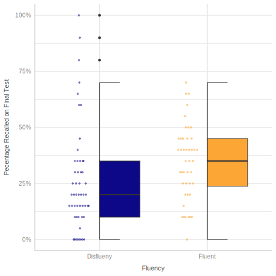
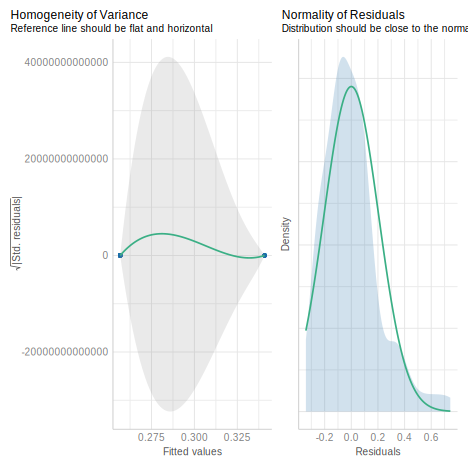
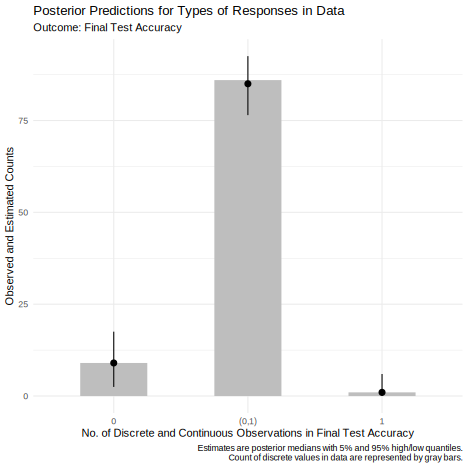

Toward A Beta Model: A Tutorial For Using Beta Regression In Pychological Research To Analyze Proportional and Percentage Data
Jason Geller1, Robert Kubinec, and Matti Vuorre
1Department of Psychology, Boston College
Author Note
Jason Geller  http://orcid.org/0000-0002-7459-4505
http://orcid.org/0000-0002-7459-4505
Correspondence concerning this article should be addressed to Jason Geller, Department of Psychology, Boston College, 1234 Capital St., New York, NY 12084-1234, USA, Email: drjasongeller@gmail.com
Abstract
Proportional data are widespread in psychology. These data are usually analyzed with methods falling under the general linear model, which are not ideal for this type of data. A better alterantive is the beta regession model which is based on the beta distribution. A beta regression can be used to model data that is non-normal, heteroscedastic, and bounded between an interval [0,1]. Thus, the beta regression model is well-suited to examine outcomes in psycholgical research expressed as proportions, percentages, or ratios. The overall purpose of this tutorial is to give researchers a hands-on demonstration of how to use beta regression using a real example from the psychological literature. First, we introduce the beta distribution and the beta regression model highlighting crucial components and assumptions. Second, we highlight how to conduct a beta regression in R using an example dataset from the learning and memory literature. Some extensions of the beta model are then discussed (e.g., zero-inflated, zero- one-inflated, and ordered beta). We present accompanying R code throughout. All code to reproduce this paper can be found on Github:
Keywords: Beta regression, tutorial, cognitive psychology, learning and memory
Toward A Beta Model: A Tutorial For Using Beta Regression In Pychological Research To Analyze Proportional and Percentage Data
In psychological research it is quite common to use response outcomes that are proportional in nature. For example, it is quite common actual learning (accuracy on a memory test). As a concrete example, let’s say you run a memory experiment wherein participants read a short passage pertaining to some topic or subject. After a short distractor task, participants complete a final memory test consisting of 10 short-answer questions, each worth a different number of points (e.g., question 1 may be worth 4 points while question 2 may be worth 1 point). Your estimand of interest is the total number of correct answers out of the total possible points for each question. With this as your main outcome, the resulting metric would be proportional in nature. How do you analyze this type of data?
Statistical analysis of proportions can present numerous difficulties. By definition, proportions are limited to numerical values between, and including, 0 and 1, and the variability in the observed proportions usually varies systematically with the mean of the response. It is quite common to analyze proportional outcomes using methods falling under the general linear model (GLM). There are several issues with this approach, however. First, the GLM assumes the residuals in the model are normal distributed. Second, it assumes an unbounded distribution that can extend from -\infty to \infty. Lastly, the GLM assumes constant residuals across varying levels of variables in the model. These assumptions are often violated when dealing with proportional data, which are typically bounded between 0 and 1 and may not follow a normal distribution (Ferrari & Cribari-Neto, 2004; Paolino, 2001). Adopting a model that does not capture your data accurately can have harmful consequences, such as missing a true effect (Type 2 error), or mistaking an effect as veridical (Type 1 error). A goal for any researcher trying to draw inferences from their data is to fit a model that accurately captures the important freatures of your data and has predictive utility ((Yarkoni & Westfall, 2017)).
The issues related to analyzing proportional data are not new (see (Bartlett, 1936)). Luckily, several analysis strategies are available to deal with them. One such approach we highlight here is beta regression (Ferrari & Cribari-Neto, 2004; Paolino, 2001) and some of its alternatives. With the combination of open-source programming languages like R (R Core Team, 2024) and the great community of package developers, it is becoming trivial to run analyses like beta regression. However, adoption of these methods, especially in psychology, is sparse. A quick Web of Science search for a 10 year period spanning 2014-2024 using (TS=(Psychology)) AND TS=(beta regression) as search terms returned ~100 articles. One reason for the lack of adaptation could be the lack of resources available to wider community (but see great blogs by (Heiss, 2021) and (Vuorre, 2019)). We attempt to the rectify this herein.
In this article, we plan to (a) give a brief, non-technical overview of the principles underlying beta regression, (b) walk-through an empirical example of applying beta regression using popular frequentist and Bayesian packages in the popular R programming language and (c) highlight the the extensions which are most relevant to researchers in psychology (e.g., zero-inflated, zero-one-inflated, and ordered beta regressions). We present accompanying R code throughout.
Beta distribution
Going back to our example from the introduction, our main measure is continuous varying between 0 and 1. Given this, what kind of distribution can be used to fit this data? The beta distribution is perfect for analyzing outcomes like proportions, percentages, and ratios.1 The beta distribution has some desirable characteristics that make it ideal for analyzing this type of data: It is continuous, it is limited to numbers that fall between 0 and 1, and it highly flexible—it can take on a number of different distribution shapes. It is important to note that the beta distribution excludes numbers that are exactly 0 and exactly 1. That is, it cannot model values that are exactly 0 or 1.
The beta distribution can take on a number of different shapes. The location, skew, and spread of the distribution is controlled by two parameters: shape1 and shape2. Shape 1 is sometimes called \alpha and shape 2 is sometimes called \beta. Together these two parameters shape the density curve of the distribution. For example, let’s suppose a participant got 4 out of 6 correct on a test item. We can take the number of correct on that particular test item (4) and divide that by the number of correct (4) + number of incorrect (2) and plot the resulting density curve. Shape1 in this example would be 4 (number of points received). This parameter reflects the number of successes. Shape2 would be 2–the number of points not received. This parameter reflects the number of failures. Looking at Figure 1a, we see the distribution for one of our questions is shifted towards one indicating higher accuracy on the exam. If we reversed the values of the two parameters, we would get a distribution shifted towards 0 (Figure 1b), indicating a lower accuracy. By adjusting the values of two parameters, we can get a wide range of distributions (e.g., u-shaped, inverted u-shaped , normal, or uniform). As can be seen, the beta distribution is a distribution of proportions or probabilities.
However, the canonical parametrization of \alpha and \beta does not lend itself to the regression framework. Thus, it is quite common to talk about \mu and \phi instead, where \mu represents the mean or average, and \phi represents the precision. We can reparamterize \alpha and \beta into \mu and \phi:
\begin{equation}
\begin{aligned}[t]
\text{Shape 1:} && a &= \mu \phi \\
\text{Shape 2:} && b &= (1 - \mu) \phi
\end{aligned}
\qquad\qquad\qquad
\begin{aligned}[t]
\text{Mean:} && \mu &= \frac{a}{a + b} \\
\text{Precision:} && \phi &= a + b
\end{aligned}
\end{equation}
Beta regression
Beta regression provides a means to relate predictors to the parameters of a beta-distributed response variable. The beta regression is a two-part model model that It utilizes a link function (commonly a logit) to model the mean of our response variable as a function of the predictor variables, while another link function models the dispersion parameter (commonly a log). This approach respects the bounded nature of the data and allows for heteroskedasticity, making it highly appropriate for data that represents proportions or rates.
Example
Data and Methods
Now we have built up an intuition about the beta distribution we can start to analyze some data. The principles of beta regression are best understood in the context of a real data set. The example we are gonna use comes from the learning and memory literature. A whole host of literature has shown extrinic cues like fluency (i.e., how easy something is to process) can influence metamemory (i.e., how well we think we will remember something). As an interesting example, it has been shown fluency of a professor when delivering content can influence our perceptions of how well we will remember something, but does not influence actual memory performance, or what we learn (Carpenter et al., 2013; Toftness et al., 2017; Witherby & Carpenter, 2022). Fluency has been shown have a strong influence on metamemory, but a weak effect on actual memory (see (Xie et al., 2018) for a meta-analysis; c.f., (Weissgerber et al., 2021). However, Wilford et al. (2020) showed fluency can actually impact actual memory. In several experiments, participants watching fluent instructors discussing calico cats and skin wrinkling remembered more information on a final test compared to participants who watched a disfluent instructor discussing the same things. There are several reasons posed for the discrepancy in the literature, and I refer interested readers to Wilford et al. (2020). Given the interesting results, we chose this paper to highlight. In the current tutorial we are going to re-analyze the final recall data from Wilford et al. (2021; Experiment 1a). Data for the paper can be found here:https://osf.io/6tyn4/. Accuracy data is widely used in psychology and is well suited for beta regression. Despite this, it is common to treat the final test data as continuous or analyze the resulting proportions using techniques from the general linear model. Below we will reproduce the analysis conducted by Wilford et al. (2021, Experiment 1a) and then re-analyze it using beta regression. We hope to show how beta regression and its extensions can be a more powerful tool in making inferences about your data. We will highlight
Wilford et al. (2020; Expt 1a) presented participants with two short videos on the genetics of calico cats and why skin wrinkles. Participants viewed either disfluent or fluent versions of these videos. See examples here:. For each video, metamemory was assessed using judgement of learning (JOLS). JOLs require participants to rate an item on scale between 0-100 with 0 representing the item will not be remembered and a 100 representing they will definitely remember the item. In addition, other questions about the instructor were assessed and how much they learned. After a distractor task, a final free recall test was given were participants had to recall as much information about the video as they could in 3 minutes. Participants could score up to 10 points for each video. Here we will only being looking at the final recall data, but we could also analyze the JOL data as well with a beta rergession.
Reanalysis of Wilford et al. Experiment 1a
GLM approach
In Experiment 1a, Wilford et al. (2020) only used the first time point and compared fluent and disfluent conditions with a t-test. In our reanalysis, we will run a very simple regression looking at memory performance between the fluent and disfluent conditions. This will allow for easier generalziation between the GLM and beta regression models. Specifically, we will examine accuracy on final test (because the score was on a 10 point scale we multiplied each value by 10 and divided by 100 to get a proportion) as our DV and Condition. Fluency will be dummy coded with the fluent level as our reference.
Load packages and data
As a first step, we will load the necessary packages we will be using and the data. While we load all the necessary packages here, I highlight when packages are needed when analyses are run.
# packages needed
library(tidyverse) # tidy functions/data wrangling/viz
library(betareg) # run beta regression
library(glmmTMB) # zero inflated beta
library(easystats)
library(gghalves)
library(ggbeeswarm) # Special distribution-shaped point jittering
library(scales) # percentage
library(tinytable) # tables
library(marginaleffects) # marginal effects
options(scipen = 999) # get rid of scienitifc notationNext, we load in our data, rename the columns to make them more informative, and transform the data. Here we transform accuracy so it is a proportion by multiplying each score by 100, and dummy code the fluency variable.
# Read the CSV file located in the "MS/data" directory and store it in a dataframe
fluency_data <- read.csv(here::here("MS/data/miko_data.csv")) %>%
# Rename the columns for better readability
rename(
"Participant" = "ResponseID", # Rename "ResponseID" to "Participant"
"Fluency" = "Condition", # Rename "Condition" to "Fluency"
"Time" = "name", # Rename "name" to "Time"
"Accuracy" = "value" # Rename "value" to "Accuracy"
) %>%
# Transform the data
mutate(
Accuracy = Accuracy *10 / 100, # Convert Accuracy values to proportions
Fluency = ifelse(Fluency == 1, "Fluent", "Disflueny"), # rename levels
Fluency_dummy = ifelse(Fluency == "Fluent", 0, 1), # Recode
#Fluency: 1 becomes 0, others become 1
Fluency_dummy = as.factor(Fluency_dummy) # turn fluency cond to dummy code
) %>%
filter(Time=="FreeCt1AVG") %>% # only choose first time point
# Drop the column "X" and "time" from the dataframe
select(-X, -Time)
# Display the first few rows of the modified dataframe
head(fluency_data) %>%
tt()| Participant | Fluency | Accuracy | Fluency_dummy |
|---|---|---|---|
| R_00Owxl28JtOADxn | Fluent | 0.45 | 0 |
| R_1DZHq7wW6PhBu7l | Fluent | 0.30 | 0 |
| R_1FfS9t7o3G2waGp | Fluent | 0.40 | 0 |
| R_1gqH4bLsvaqpRRZ | Fluent | 0.15 | 0 |
| R_1i4M7ZdpTcywgbq | Fluent | 0.50 | 0 |
| R_1NyRhBnAB5J2S3r | Fluent | 0.70 | 0 |
| Column | Key |
| Participant | Participant ID number |
| Fluency | Fluent vs. Disfluent |
| Fluency_dummy | Fluent: 0; Disfluent 1 |
| Accuracy | Proportion recalled (idea units) |
Regression
To first fit a regression model using the lmfunction to the data. Below is the output from our regression analysis.
ols_model <- lm(Accuracy~Fluency_dummy, data=fluency_data)| Parameter | Coefficient | SE | 95% CI | t(94) | p |
|---|---|---|---|---|---|
| (Intercept) | 0.34 | 0.03 | (0.28, 0.40) | 11.00 | < .001 |
| Fluency dummy (1) | -0.08 | 0.04 | (-0.17, -5.80e-04) | -2.00 | 0.048 |
Focusing on the fixed effects, we see the that there is a significant effect of Fluency, b = -0.0841783 , SE = 0.0421038 , 95% CIs = -0.1677764,-0.0005802, p = 0.0484626. This matched what Wilford et al. (2020) found.

Beta regression approach
Using all the data, we see the fluency effect was significant. Looking at the assumptions check for our model using easystats (Lüdecke et al., 2022a) and check_model function, some issues are apparent (see Figure 5). Specifically, there is appears to violations of normality, and homoscakdacity assumptions.
ols model
One solution to this would be run a beta regression model. Below we fit a beta regression using the betareg package(Cribari-Neto & Zeileis, 2010).
Error in betareg(Accuracy ~ Fluency_dummy, data = fluency_data): invalid dependent variable, all observations must be in (0, 1)When you run the above model, an error will appear: Error in betareg(Accuracy ~ Fluency_dummy, data = fluency_data) : invalid dependent variable, all observations must be in (0, 1). If your remember, the beta distribution can model responses in the interval [0-1], but not exactly 0 or 1. We need make sure there are no zeros and ones in our dataset.
Let’s take a look at how many zeros and one are in our dataset.
| Accuracy | n |
|---|---|
| 0 | 9 |
| 1 | 1 |
In our dataset, we have 15 rows with accuracy of 0 and 1 row with accuracy of exactly 1. We can employ a little hack to get this to work. To do this. we nudge our 0s towards .01 and 1s to .99 so they fall within the interval of [0-1].
Let’s fit the model again.
No errors this time! Now, Let’s interpret the results.
| Model Summary | |||||
|---|---|---|---|---|---|
| Parameter | Coefficient | SE | 95% CI | z | p |
| Fixed Effects | |||||
| (Intercept) | -0.59 | 0.14 | (-0.88, -0.31) | -4.11 | < .001 |
| Fluency dummy (1) | -0.45 | 0.20 | (-0.83, -0.06) | -2.27 | 0.023 |
| Precision | |||||
| (phi) | 3.45 | 0.46 | (2.55, 4.34) | 7.51 | < .001 |
\mu component
Looking at the model output in Table 2, there are two components we need to interpret when using beta regression. The first set of coefficients under fixed effects represents how factors influence the \mu parameter. These coefficients are interpreted on the scale of the logit link function, meaning they represent changes in the log-odds of the mean proportion. The intercept term represents the log odds of the mean on accuracy for the fluent instructor condition coded as the reference. The fluency coefficient represents the difference between the fluency and disfluency conditions. Watching a fluent instructor compared to disfluent instructor decreases the log-odds of the mean on free recall, b = -0.4471558 , SE = 0.1968527 , 95% CIs = -0.83298,-0.0613316], p = 0.0231152.
Predicted probabilities.
While it is quite common to report the logits from a non-linear model, they are not very useful or intuitive. It is recommended you discuss the effects of the predictor on the actual outcome of interest (in this case the 0-1 scale). The logit link allows us to transform back and forth between log-odds and probabilities. By using the inverse of the logit, we can easily transform coefficients to obtain proportions or percentages. In a simple case, we can do this manually, but when we have many moving pieces it can get quite complicated. Thankfully, there is a package called marginaleffects (Arel-Bundock, 2024) that can help us extract the probabilities quite easily.2 To get the percentages for each of our categorical predictors we can use the function from the package called avg_predictions.
| Fluency_dummy | estimate | std.error | statistic | p.value | s.value | conf.low | conf.high |
|---|---|---|---|---|---|---|---|
| 0 | 0.3558732 | 0.03308490 | 10.756364 | 0.000000000000000000000000005530943 | 87.22453 | 0.2910280 | 0.4207184 |
| 1 | 0.2610580 | 0.02722154 | 9.590124 | 0.000000000000000000000879793814736 | 69.94525 | 0.2077047 | 0.3144112 |
For the Fluency factor, we can interpret the estimate column in terms of proportions or percentages. That is, participants who watched the fluency video scored on average 36% on the final exam compared to 29% who watched the disfluency video.
Marginal effects.
We can also examine changes in predicted probabilities for variations in an independent variable. This is called a marginal effect and can be used as a measure of effect size. There are different types of marginal effects, and various packages calculate them differently. Since we will be using the marginaleffects package for this tutorial, we will focus on the average marginal effect (AME), which is used by default in the marginaleffects package. The AME is the predicted change in the outcome for a very small change in the independent variable. In the marginaleffects package this invovles generating predictions for each row of the original data then averaging these predictions. One effect size measure we can calculate with categorical variables is the risk difference, which is the discrete difference between the average marginal effect of one condition or group and that of another condition or group. In the marginaleffects package, we can use the function avg_comparisons to obtain this metric. This function can also be used to get other popular effect size metrics, such as odds ratios and risk ratios.
| term | contrast | estimate | std.error | statistic | p.value | s.value | conf.low | conf.high | predicted_lo | predicted_hi | predicted |
|---|---|---|---|---|---|---|---|---|---|---|---|
| Fluency_dummy | mean(1) - mean(0) | -0.09481521 | 0.04180276 | -2.268157 | 0.02331964 | 5.422311 | -0.1767471 | -0.01288332 | 0.3558732 | 0.261058 | 0.3558732 |
Interpreting this output, In the fluency condition, participants who watched a fluent instructor scored 9% higher on the final recall test than participants who saw the disfluent instructor. This difference is statistically different, b= -0.0948152, SE = 0.0418028, 95 % CIs [-0.1767471, -0.0128833 ], p = 0.0233196.
| term | contrast | estimate | p.value | s.value | conf.low | conf.high | predicted_lo | predicted_hi | predicted |
|---|---|---|---|---|---|---|---|---|---|
| Fluency_dummy | ln(odds(1) / odds(0)) | 0.6394443 | 0.02311523 | 5.435012 | 0.4347518 | 0.9405113 | 0.3558732 | 0.261058 | 0.3558732 |
Plotting
We can easily plot the \mu parmeter part of model using the marginaleffects package and the plot_predictions function.

Precision (\phi) component
The other component we need to pay attention to is the dispersion or precision parameter coefficients labeled as phi . The dispersion parameter tells us how precise our estimate is. Specifically, the dispersion parameter in beta regression tells us about the variability of the response variable around its mean. Specifically, a higher dispersion parameter indicates a narrower distribution, reflecting less variability. Conversely, a lower dispersion parameter suggests a wider distribution, reflecting greater variability. Understanding the dispersion parameter helps us gauge the precision of our predictions and the consistency of the response variable. In the beta_model object above we only modeled the dispersion of the intercept by default.
| Model Summary | |||||
|---|---|---|---|---|---|
| Parameter | Coefficient | SE | 95% CI | z | p |
| Fixed Effects | |||||
| (Intercept) | -0.59 | 0.14 | (-0.88, -0.31) | -4.11 | < .001 |
| Fluency dummy (1) | -0.45 | 0.20 | (-0.83, -0.06) | -2.27 | 0.023 |
| Precision | |||||
| (phi) | 3.45 | 0.46 | (2.55, 4.34) | 7.51 | < .001 |
The intercept under the precision heading is not that interesting. Let’s model the dispersion of the Fluency factor. To do this we add a vertical bar to our betareg function which allows us to model the dispersion of any factor to the right of it. In the below model, beta_model_dis, we model the precision of the Fluency factor.
# add disp/percison for fluency
beta_model_dis<-betareg(Accuracy~Fluency_dummy | Fluency_dummy, data=data_beta)
# add disp/percison for fluency
beta_model_dis<-betareg(Accuracy~Fluency_dummy | Fluency_dummy, data=data_beta)| Model Summary | |||||
|---|---|---|---|---|---|
| Parameter | Coefficient | SE | 95% CI | z | p |
| Fixed Effects | |||||
| (Intercept) | -0.68 | 0.12 | (-0.91, -0.45) | -5.83 | < .001 |
| Fluency dummy (1) | -0.25 | 0.20 | (-0.63, 0.14) | -1.24 | 0.215 |
| Precision | |||||
| (Intercept) | 1.85 | 0.20 | (1.45, 2.24) | 9.20 | < .001 |
| Fluency dummy (1) | -0.94 | 0.27 | (-1.47, -0.41) | -3.49 | < .001 |
Looking at the precision parameter coefficient, it is improtant to note that are not measured on the logit scale, instead the estimates are logged. To interpret them on the original scale, we can exponent the log-transformed value—this transformation gets us back to our original scale. We get only the dispersion parameter by setting by setting the component argument to precision in model_paramters. We can also get the original value by including the exponentiate = TRUE.
| Model Summary | |||||
|---|---|---|---|---|---|
| Parameter | Coefficient | SE | 95% CI | z | p |
| (Intercept) | 6.33 | 1.27 | (4.27, 9.38) | 9.20 | < .001 |
| Fluency dummy (1) | 0.39 | 0.11 | (0.23, 0.66) | -3.49 | < .001 |
The \phi intercept represents the precision of the fluent condition. The \phi coefficient for Fluency represents the change in that precision for the Fluent instructors vs. Disfluent instructors. Here it is statitsically significnat, b = -0.9397634 , SE = 0.2694406 , 95% CIs = -1.4678573,-0.4116695], p = 0.000487. A critical assumption of the GLM is homoscedasticity, which means constant variance of the errors. Here we see one of the benefits of a beta regression model. We can include a dispersion parameter for Fluency. Properly accounting for dispersion is crucial because it impacts the precision of our mean estimates and, consequently, the significance of our coefficients. The inclusion of dispersion in the our model changed the statistical significance of the \mu coefficient. This suggests that failing to account for the dispersion of the variables might lead to biased estimates. This highlights the potential utility of an approach like beta regression over a traditional GLM (regression or ANOVA approach), as beta regression can explicitly model dispersion and address issues of heteroscedasticity.
We wont always need to include dispersion parameters for each of our variables. it is perferbale to conduct a very simple likelihood ratio test (LRT) to examine if we need to include dispersion into our model. To test this we use the test_likelihoodratio from the easystats ecosystem (Lüdecke et al., 2022b).
| Name | Model | df | df_diff | Chi2 | p |
|---|---|---|---|---|---|
| beta_model | betareg | 3 | NA | NA | NA |
| beta_model_dis | betareg | 4 | 1 | 11.51936 | 0.0006887505 |
Here we want to model the precision for fluency.
Bayesian Implementation beta regression
We can also fit beta models under a Bayesian framework. Adopting a bayesian framework often provides more flexibility and always more powerful inferences as it allows us to quantity uncertainty around our estimates. For the purposes of this tutorial, we will not be getting into the minutae of Bayesian data analysis (i.e., setting informative priors, MCMC sampling, etc,). For the following analyses we will be using default or wealkly informative priors. This will get us something tantamount to a frequent analysis you are used to seeing. For a more in-depth look into Bayesian data analysis I refer the reader to XXX.
To fit our Bayesian models, we will be using a Bayesian package called brms (Bürkner, 2017) . brms is a powerful and flexible Bayesian regression modeling package that offers built in support for the beta distribution and its alternatives.
We can recreate the beta model from betareg in brms. Instead of using the | operator to specify different paramters, we model each parameter specifically we do that by using the bf function. We fit two formulas, one for \mu and one for \phi.
Loading required package: RcppLoading 'brms' package (version 2.21.0). Useful instructions
can be found by typing help('brms'). A more detailed introduction
to the package is available through vignette('brms_overview').
Attaching package: 'brms'The following object is masked from 'package:glmmTMB':
lognormalThe following object is masked from 'package:stats':
arThis is cmdstanr version 0.8.1- CmdStanR documentation and vignettes: mc-stan.org/cmdstanr- CmdStan path: /Users/jasongeller/.cmdstan/cmdstan-2.35.0- CmdStan version: 2.35.0We fit our model using the brm function.
| Model Summary | |||||
|---|---|---|---|---|---|
| Parameter | Median | 95% CI | pd | Rhat | ESS |
| (Intercept) | -0.68 | (-0.91, -0.44) | 100% | 0.999 | 4653.00 |
| phi_Intercept | 1.81 | (1.40, 2.17) | 100% | 1.000 | 3423.00 |
| Fluency_dummy1 | -0.24 | (-0.66, 0.15) | 89.35% | 1.000 | 3021.00 |
| phi_Fluency_dummy1 | -0.93 | (-1.44, -0.41) | 99.98% | 0.999 | 3345.00 |
To make the output more readable, each model parameter is labeled with a prefix, except for the \mu parameter. Looking at the results you can hopefully see that they basically the same that we found with `betareg`in model_beta. Additionally, ll the parameters can be interpreted in a similar manner and we can use marginaleffects to extract marginal effects and risk difference. The results are basically the same that we found with `betareg`in model_beta.
Fluency_dummy Estimate 2.5 % 97.5 %
0 0.337 0.287 0.392
1 0.284 0.223 0.354
Columns: Fluency_dummy, estimate, conf.low, conf.high
Type: response
Term Contrast Estimate 2.5 % 97.5 %
Fluency_dummy mean(1) - mean(0) -0.0518 -0.137 0.0337
Columns: term, contrast, estimate, conf.low, conf.high, predicted_lo, predicted_hi, predicted, tmp_idx
Type: response The risk difference in predicted outcomes of 0.05, which is roughly what we found in earlier models. We also have a 95% credible interval for the difference. In contrast to frequentist models we can interpret this in probabilistic terms. There is no p-values to interepet in Bayesian models. What is sometimes done to judge statistical significance is examine the 95% Credible interval to see if it includes 0–if it does not then the effect can be said to be significant.
Something cool we can do that we cant do with the frequentist version is explore the posterior of the distribution which allows us to quantify uncertainty of the parameters.
Zero-inflated beta (ZIB) regression
A limitation of the beta regression model is it can can only model values between 0 and 1, but not 0 or 1. In our dataset we have 9 rows with accuracy equal to zero.
To use the beta distribution we nudged our zeros to 0.01–which is never a good idea in practice. Luckily, there is a model we can use called the zero-inflated beta (ZIB) model that takes into account the structural 0s in our data. We’ll still model the 𝜇 and 𝜙 (or mean and precision) of the beta distribution, but now we’ll also add one new special parameter: 𝛼. With zero-inflated regression, we’re actually modelling a mixture of data-generating process. The \alpha parameter uses a logistic regression to model whether the data is 0 or not. In our case it might be important to model this, as fluency of instructor might be an important factor in predicting the zeros in our model. Below we fit a model called beta_model_0 using the glmmTMB package. The betareg model cannot model zero-infalted data. In the glmmTMB function, we can model the zero inflation by including an argument called ziformula. This allows us to model the new parameter \alpha. Let’s fit a model where there is a zero-inflated component for Fluency.
| Model Summary | |||||
|---|---|---|---|---|---|
| Parameter | Coefficient | SE | 95% CI | z | p |
| Fixed Effects | |||||
| (Intercept) | -0.63 | 0.11 | (-0.84, -0.42) | -5.91 | < .001 |
| Fluency dummy (1) | -0.03 | 0.18 | (-0.39, 0.33) | -0.17 | 0.863 |
| Zero-Inflation | |||||
| (Intercept) | -3.76 | 1.01 | (-5.74, -1.78) | -3.72 | < .001 |
| Fluency dummy (1) | 2.06 | 1.08 | (-0.06, 4.18) | 1.90 | 0.057 |
| Dispersion | |||||
| (Intercept) | 2.07 | 0.20 | (1.67, 2.47) | 10.11 | < .001 |
| Fluency dummy (1) | -0.85 | 0.28 | (-1.40, -0.30) | -3.02 | 0.003 |
As before, the 𝜇 parameter coefficients under the fixed effect header (i.e., Intercept, Fluency_dummy) are on the logit scale; while 𝜙 parameter coefficients under the Dispersion header under the dispersion header are on the log scale. In addition, \alpha under the zero-inflated header is on the logit scale. Looking at the output, the \mu part of the model, there are no significant effects. However, for the zero-inflated part of the model, the Fluency predictor is significant. Because is on the logit scale we can back-transform it to the probability scale. To do this easily, we can use the avg_predictions function from marginaleffects package. Because we are interested in the zero-inflated part of the model we set the type argument to zprob.
We can get the predicted probabilities for each condition using the avg_predictions function.
Warning: For this model type, `marginaleffects` only takes into account the
uncertainty in fixed-effect parameters. You can use the `re.form=NA`
argument to acknowledge this explicitly and silence this warning.| rowid | Fluency_dummy | estimate | std.error | statistic | p.value | s.value | conf.low | conf.high | rowid_dedup |
|---|---|---|---|---|---|---|---|---|---|
| 1 | 0 | 0.02272727 | NA | NA | NA | NA | NA | NA | 1 |
| 2 | 1 | 0.15384615 | NA | NA | NA | NA | NA | NA | 2 |
We can also get the average marginal effect of Fluency like we did before:
Warning: For this model type, `marginaleffects` only takes into account the
uncertainty in fixed-effect parameters. You can use the `re.form=NA`
argument to acknowledge this explicitly and silence this warning.
Term Contrast Estimate Std. Error z Pr(>|z|) S 2.5 %
Fluency_dummy mean(1) - mean(0) 0.131 NA NA NA NA NA
97.5 %
NA
Columns: term, contrast, estimate, std.error, statistic, p.value, s.value, conf.low, conf.high, predicted_lo, predicted_hi, predicted
Type: zprob Interpreting the estimate, the disfluency condition has a higher percentage of zeros (10%) than the fluent condition (2%). Looking at the risk difference, seeing lecture videos with a fluent instructor reduces the proportion of zeros by about 6%. Here we have evidence that participants learned more from watching the fluent instructor than the disfluent instructors.
As a word of caution, the marginaleffects package has some issues with fitting models from glmmTMB and it has been recommended not to use it.
Bayesian Implementation of zero-inflated beta
Luckly, we can fit a zero-inflated model using brms and the marginaleffects package
Compiling Stan program...Start samplingTo get the zero-inflated part of the model we can set dpar argument to zi and get risk difference between the conditions. With a Bayesian implementation we get 95% credible intervals and we see the difference is significant.
We can easily plot the zero-inflated part of the model using the plot_predictions function
Warning: Vectorized input to `element_text()` is not officially supported.
ℹ Results may be unexpected or may change in future versions of ggplot2.List of 136
$ line :List of 6
..$ colour : chr "black"
..$ linewidth : num 0.636
..$ linetype : num 1
..$ lineend : chr "butt"
..$ arrow : logi FALSE
..$ inherit.blank: logi TRUE
..- attr(*, "class")= chr [1:2] "element_line" "element"
$ rect :List of 5
..$ fill : chr "white"
..$ colour : chr "black"
..$ linewidth : num 0.636
..$ linetype : num 1
..$ inherit.blank: logi TRUE
..- attr(*, "class")= chr [1:2] "element_rect" "element"
$ text :List of 11
..$ family :List of 11
.. ..$ data : list()
.. .. ..- attr(*, "class")= chr "waiver"
.. ..$ layers :List of 1
.. .. ..$ :Classes 'LayerInstance', 'Layer', 'ggproto', 'gg' <ggproto object: Class LayerInstance, Layer, gg>
aes_params: list
compute_aesthetics: function
compute_geom_1: function
compute_geom_2: function
compute_position: function
compute_statistic: function
computed_geom_params: NULL
computed_mapping: NULL
computed_stat_params: NULL
constructor: call
data: predictions, data.frame
draw_geom: function
finish_statistics: function
geom: <ggproto object: Class GeomPointrange, Geom, gg>
aesthetics: function
default_aes: uneval
draw_group: function
draw_key: function
draw_layer: function
draw_panel: function
extra_params: na.rm orientation
handle_na: function
non_missing_aes:
optional_aes:
parameters: function
rename_size: FALSE
required_aes: x y ymin|xmin ymax|xmax
setup_data: function
setup_params: function
use_defaults: function
super: <ggproto object: Class Geom, gg>
geom_params: list
inherit.aes: TRUE
layer_data: function
map_statistic: function
mapping: uneval
position: <ggproto object: Class PositionDodge, Position, gg>
compute_layer: function
compute_panel: function
preserve: total
required_aes:
setup_data: function
setup_params: function
width: 0.15
super: <ggproto object: Class PositionDodge, Position, gg>
print: function
setup_layer: function
show.legend: NA
stat: <ggproto object: Class StatIdentity, Stat, gg>
aesthetics: function
compute_group: function
compute_layer: function
compute_panel: function
default_aes: uneval
dropped_aes:
extra_params: na.rm
finish_layer: function
non_missing_aes:
optional_aes:
parameters: function
required_aes:
retransform: TRUE
setup_data: function
setup_params: function
super: <ggproto object: Class Stat, gg>
stat_params: list
super: <ggproto object: Class Layer, gg>
.. ..$ scales :Classes 'ScalesList', 'ggproto', 'gg' <ggproto object: Class ScalesList, gg>
add: function
add_defaults: function
add_missing: function
backtransform_df: function
clone: function
find: function
get_scales: function
has_scale: function
input: function
map_df: function
n: function
non_position_scales: function
scales: list
train_df: function
transform_df: function
super: <ggproto object: Class ScalesList, gg>
.. ..$ guides :Classes 'Guides', 'ggproto', 'gg' <ggproto object: Class Guides, gg>
add: function
assemble: function
build: function
draw: function
get_custom: function
get_guide: function
get_params: function
get_position: function
guides: NULL
merge: function
missing: <ggproto object: Class GuideNone, Guide, gg>
add_title: function
arrange_layout: function
assemble_drawing: function
available_aes: any
build_decor: function
build_labels: function
build_ticks: function
build_title: function
draw: function
draw_early_exit: function
elements: list
extract_decor: function
extract_key: function
extract_params: function
get_layer_key: function
hashables: list
measure_grobs: function
merge: function
override_elements: function
params: list
process_layers: function
setup_elements: function
setup_params: function
train: function
transform: function
super: <ggproto object: Class GuideNone, Guide, gg>
package_box: function
print: function
process_layers: function
setup: function
subset_guides: function
train: function
update_params: function
super: <ggproto object: Class Guides, gg>
.. ..$ mapping : Named list()
.. .. ..- attr(*, "class")= chr "uneval"
.. ..$ theme : list()
.. ..$ coordinates:Classes 'CoordCartesian', 'Coord', 'ggproto', 'gg' <ggproto object: Class CoordCartesian, Coord, gg>
aspect: function
backtransform_range: function
clip: on
default: TRUE
distance: function
expand: TRUE
is_free: function
is_linear: function
labels: function
limits: list
modify_scales: function
range: function
render_axis_h: function
render_axis_v: function
render_bg: function
render_fg: function
setup_data: function
setup_layout: function
setup_panel_guides: function
setup_panel_params: function
setup_params: function
train_panel_guides: function
transform: function
super: <ggproto object: Class CoordCartesian, Coord, gg>
.. ..$ facet :Classes 'FacetNull', 'Facet', 'ggproto', 'gg' <ggproto object: Class FacetNull, Facet, gg>
compute_layout: function
draw_back: function
draw_front: function
draw_labels: function
draw_panels: function
finish_data: function
init_scales: function
map_data: function
params: list
setup_data: function
setup_params: function
shrink: TRUE
train_scales: function
vars: function
super: <ggproto object: Class FacetNull, Facet, gg>
.. ..$ plot_env :<environment: 0x17e433ad8>
.. ..$ layout :Classes 'Layout', 'ggproto', 'gg' <ggproto object: Class Layout, gg>
coord: NULL
coord_params: list
facet: NULL
facet_params: list
finish_data: function
get_scales: function
layout: NULL
map_position: function
panel_params: NULL
panel_scales_x: NULL
panel_scales_y: NULL
render: function
render_labels: function
reset_scales: function
resolve_label: function
setup: function
setup_panel_guides: function
setup_panel_params: function
train_position: function
super: <ggproto object: Class Layout, gg>
.. ..$ labels :List of 7
.. .. ..$ x : chr "Fluency_dummy"
.. .. ..$ y : chr "Accuracy"
.. .. ..$ colour : NULL
.. .. ..$ fill : NULL
.. .. ..$ linetype: NULL
.. .. ..$ ymin : chr "conf.low"
.. .. ..$ ymax : chr "conf.high"
.. ..- attr(*, "class")= chr [1:2] "gg" "ggplot"
.. ..- attr(*, "modeldata")='data.frame': 96 obs. of 2 variables:
.. .. ..$ Accuracy : num [1:96] 0.45 0.3 0.4 0.15 0.5 0.7 0.3 0.4 0.3 0.25 ...
.. .. ..$ Fluency_dummy: Factor w/ 2 levels "0","1": 1 1 1 1 1 1 1 1 1 1 ...
.. .. ..- attr(*, "marginaleffects_variable_class")= Named chr [1:2] "numeric" "factor"
.. .. .. ..- attr(*, "names")= chr [1:2] "Accuracy" "Fluency_dummy"
..$ face : chr "plain"
..$ colour : chr "black"
..$ size : num 14
..$ hjust : num 0.5
..$ vjust : num 0.5
..$ angle : num 0
..$ lineheight : num 0.9
..$ margin : 'margin' num [1:4] 0points 0points 0points 0points
.. ..- attr(*, "unit")= int 8
..$ debug : logi FALSE
..$ inherit.blank: logi TRUE
..- attr(*, "class")= chr [1:2] "element_text" "element"
$ title : NULL
$ aspect.ratio : NULL
$ axis.title :List of 11
..$ family : NULL
..$ face : chr "plain"
..$ colour : chr "grey30"
..$ size : num 11
..$ hjust : NULL
..$ vjust : NULL
..$ angle : NULL
..$ lineheight : NULL
..$ margin : NULL
..$ debug : NULL
..$ inherit.blank: logi FALSE
..- attr(*, "class")= chr [1:2] "element_text" "element"
$ axis.title.x :List of 11
..$ family : NULL
..$ face : NULL
..$ colour : NULL
..$ size : NULL
..$ hjust : NULL
..$ vjust : num 1
..$ angle : NULL
..$ lineheight : NULL
..$ margin : 'margin' num [1:4] 10points 0points 0points 0points
.. ..- attr(*, "unit")= int 8
..$ debug : NULL
..$ inherit.blank: logi FALSE
..- attr(*, "class")= chr [1:2] "element_text" "element"
$ axis.title.x.top :List of 11
..$ family : NULL
..$ face : NULL
..$ colour : NULL
..$ size : NULL
..$ hjust : NULL
..$ vjust : num 0
..$ angle : NULL
..$ lineheight : NULL
..$ margin : 'margin' num [1:4] 0points 0points 3.5points 0points
.. ..- attr(*, "unit")= int 8
..$ debug : NULL
..$ inherit.blank: logi TRUE
..- attr(*, "class")= chr [1:2] "element_text" "element"
$ axis.title.x.bottom : NULL
$ axis.title.y :List of 11
..$ family : NULL
..$ face : NULL
..$ colour : NULL
..$ size : NULL
..$ hjust : NULL
..$ vjust : num 1
..$ angle : num 90
..$ lineheight : NULL
..$ margin : 'margin' num [1:4] 0points 10points 0points 0points
.. ..- attr(*, "unit")= int 8
..$ debug : NULL
..$ inherit.blank: logi FALSE
..- attr(*, "class")= chr [1:2] "element_text" "element"
$ axis.title.y.left : NULL
$ axis.title.y.right :List of 11
..$ family : NULL
..$ face : NULL
..$ colour : NULL
..$ size : NULL
..$ hjust : NULL
..$ vjust : num 1
..$ angle : num -90
..$ lineheight : NULL
..$ margin : 'margin' num [1:4] 0points 0points 0points 3.5points
.. ..- attr(*, "unit")= int 8
..$ debug : NULL
..$ inherit.blank: logi TRUE
..- attr(*, "class")= chr [1:2] "element_text" "element"
$ axis.text :List of 11
..$ family : NULL
..$ face : NULL
..$ colour : chr "grey50"
..$ size : num 10
..$ hjust : NULL
..$ vjust : NULL
..$ angle : NULL
..$ lineheight : NULL
..$ margin : NULL
..$ debug : NULL
..$ inherit.blank: logi FALSE
..- attr(*, "class")= chr [1:2] "element_text" "element"
$ axis.text.x :List of 11
..$ family : NULL
..$ face : NULL
..$ colour : NULL
..$ size : NULL
..$ hjust : NULL
..$ vjust : num 1
..$ angle : NULL
..$ lineheight : NULL
..$ margin : 'margin' num [1:4] 2.8points 0points 0points 0points
.. ..- attr(*, "unit")= int 8
..$ debug : NULL
..$ inherit.blank: logi FALSE
..- attr(*, "class")= chr [1:2] "element_text" "element"
$ axis.text.x.top :List of 11
..$ family : NULL
..$ face : NULL
..$ colour : NULL
..$ size : NULL
..$ hjust : NULL
..$ vjust : num 0
..$ angle : NULL
..$ lineheight : NULL
..$ margin : 'margin' num [1:4] 0points 0points 2.8points 0points
.. ..- attr(*, "unit")= int 8
..$ debug : NULL
..$ inherit.blank: logi TRUE
..- attr(*, "class")= chr [1:2] "element_text" "element"
$ axis.text.x.bottom : NULL
$ axis.text.y :List of 11
..$ family : NULL
..$ face : NULL
..$ colour : NULL
..$ size : NULL
..$ hjust : num 1
..$ vjust : NULL
..$ angle : NULL
..$ lineheight : NULL
..$ margin : 'margin' num [1:4] 0points 2.8points 0points 0points
.. ..- attr(*, "unit")= int 8
..$ debug : NULL
..$ inherit.blank: logi TRUE
..- attr(*, "class")= chr [1:2] "element_text" "element"
$ axis.text.y.left : NULL
$ axis.text.y.right :List of 11
..$ family : NULL
..$ face : NULL
..$ colour : NULL
..$ size : NULL
..$ hjust : num 0
..$ vjust : NULL
..$ angle : NULL
..$ lineheight : NULL
..$ margin : 'margin' num [1:4] 0points 0points 0points 2.8points
.. ..- attr(*, "unit")= int 8
..$ debug : NULL
..$ inherit.blank: logi TRUE
..- attr(*, "class")= chr [1:2] "element_text" "element"
$ axis.text.theta : NULL
$ axis.text.r :List of 11
..$ family : NULL
..$ face : NULL
..$ colour : NULL
..$ size : NULL
..$ hjust : num 0.5
..$ vjust : NULL
..$ angle : NULL
..$ lineheight : NULL
..$ margin : 'margin' num [1:4] 0points 2.8points 0points 2.8points
.. ..- attr(*, "unit")= int 8
..$ debug : NULL
..$ inherit.blank: logi TRUE
..- attr(*, "class")= chr [1:2] "element_text" "element"
$ axis.ticks : list()
..- attr(*, "class")= chr [1:2] "element_blank" "element"
$ axis.ticks.x : NULL
$ axis.ticks.x.top : NULL
$ axis.ticks.x.bottom : NULL
$ axis.ticks.y : NULL
$ axis.ticks.y.left : NULL
$ axis.ticks.y.right : NULL
$ axis.ticks.theta : NULL
$ axis.ticks.r : NULL
$ axis.minor.ticks.x.top : NULL
$ axis.minor.ticks.x.bottom : NULL
$ axis.minor.ticks.y.left : NULL
$ axis.minor.ticks.y.right : NULL
$ axis.minor.ticks.theta : NULL
$ axis.minor.ticks.r : NULL
$ axis.ticks.length : 'simpleUnit' num 3.5points
..- attr(*, "unit")= int 8
$ axis.ticks.length.x : NULL
$ axis.ticks.length.x.top : NULL
$ axis.ticks.length.x.bottom : NULL
$ axis.ticks.length.y : NULL
$ axis.ticks.length.y.left : NULL
$ axis.ticks.length.y.right : NULL
$ axis.ticks.length.theta : NULL
$ axis.ticks.length.r : NULL
$ axis.minor.ticks.length : 'rel' num 0.75
$ axis.minor.ticks.length.x : NULL
$ axis.minor.ticks.length.x.top : NULL
$ axis.minor.ticks.length.x.bottom: NULL
$ axis.minor.ticks.length.y : NULL
$ axis.minor.ticks.length.y.left : NULL
$ axis.minor.ticks.length.y.right : NULL
$ axis.minor.ticks.length.theta : NULL
$ axis.minor.ticks.length.r : NULL
$ axis.line :List of 6
..$ colour : chr "black"
..$ linewidth : 'rel' num 1
..$ linetype : NULL
..$ lineend : NULL
..$ arrow : logi FALSE
..$ inherit.blank: logi TRUE
..- attr(*, "class")= chr [1:2] "element_line" "element"
$ axis.line.x :List of 6
..$ colour : chr "grey80"
..$ linewidth : NULL
..$ linetype : NULL
..$ lineend : NULL
..$ arrow : logi FALSE
..$ inherit.blank: logi FALSE
..- attr(*, "class")= chr [1:2] "element_line" "element"
$ axis.line.x.top : NULL
$ axis.line.x.bottom : NULL
$ axis.line.y :List of 6
..$ colour : chr "grey80"
..$ linewidth : NULL
..$ linetype : NULL
..$ lineend : NULL
..$ arrow : logi FALSE
..$ inherit.blank: logi FALSE
..- attr(*, "class")= chr [1:2] "element_line" "element"
$ axis.line.y.left : NULL
$ axis.line.y.right : NULL
$ axis.line.theta : NULL
$ axis.line.r : NULL
$ legend.background :List of 5
..$ fill : NULL
..$ colour : logi NA
..$ linewidth : NULL
..$ linetype : NULL
..$ inherit.blank: logi TRUE
..- attr(*, "class")= chr [1:2] "element_rect" "element"
$ legend.margin : 'margin' num [1:4] 7points 7points 7points 7points
..- attr(*, "unit")= int 8
$ legend.spacing : 'simpleUnit' num 14points
..- attr(*, "unit")= int 8
$ legend.spacing.x : 'simpleUnit' num 2points
..- attr(*, "unit")= int 8
$ legend.spacing.y : NULL
$ legend.key : list()
..- attr(*, "class")= chr [1:2] "element_blank" "element"
$ legend.key.size : 'simpleUnit' num 1.2lines
..- attr(*, "unit")= int 3
$ legend.key.height : NULL
$ legend.key.width : NULL
$ legend.key.spacing : 'simpleUnit' num 7points
..- attr(*, "unit")= int 8
$ legend.key.spacing.x : NULL
$ legend.key.spacing.y : NULL
$ legend.frame : NULL
$ legend.ticks : NULL
$ legend.ticks.length : 'rel' num 0.2
$ legend.axis.line : NULL
$ legend.text :List of 11
..$ family : NULL
..$ face : NULL
..$ colour : chr "grey30"
..$ size : num 10
..$ hjust : NULL
..$ vjust : NULL
..$ angle : NULL
..$ lineheight : NULL
..$ margin : NULL
..$ debug : NULL
..$ inherit.blank: logi FALSE
..- attr(*, "class")= chr [1:2] "element_text" "element"
$ legend.text.position : NULL
$ legend.title :List of 11
..$ family : NULL
..$ face : NULL
..$ colour : chr "grey30"
..$ size : num 11
..$ hjust : num 0
..$ vjust : NULL
..$ angle : NULL
..$ lineheight : NULL
..$ margin : NULL
..$ debug : NULL
..$ inherit.blank: logi FALSE
..- attr(*, "class")= chr [1:2] "element_text" "element"
$ legend.title.position : NULL
$ legend.position : chr "right"
$ legend.position.inside : NULL
$ legend.direction : NULL
$ legend.byrow : NULL
$ legend.justification : chr "center"
$ legend.justification.top : NULL
$ legend.justification.bottom : NULL
$ legend.justification.left : NULL
$ legend.justification.right : NULL
$ legend.justification.inside : NULL
$ legend.location : NULL
$ legend.box : NULL
$ legend.box.just : NULL
$ legend.box.margin : 'margin' num [1:4] 0cm 0cm 0cm 0cm
..- attr(*, "unit")= int 1
$ legend.box.background : list()
..- attr(*, "class")= chr [1:2] "element_blank" "element"
$ legend.box.spacing : 'simpleUnit' num 14points
..- attr(*, "unit")= int 8
[list output truncated]
- attr(*, "class")= chr [1:2] "theme" "gg"
- attr(*, "complete")= logi TRUE
- attr(*, "validate")= logi TRUEZero-one inflated beta (ZOIB)
The ZIB model works well if you have zeros in your data, but not 1s. In our data, we have exactly one value equal to 1. While probably not significant to the findings herein, we can model ones with a special type of model called the zero-one-inflated beta (ZOIB) model. In this model we fit four parameters or sub-models: In addition to our \mu , \phi, and \alpha parameters from the zero-inflated beta, we add the parameter \gamma . This parameter models the probability of the outcome being a 1 conditional on if the outcome was 0 or 1.
| Accuracy == 1 | n | proportion_1s |
|---|---|---|
| FALSE | 95 | 0.98958333 |
| TRUE | 1 | 0.01041667 |
Compiling Stan program...Start sampling| Model Summary | |||||
|---|---|---|---|---|---|
| Parameter | Median | 95% CI | pd | Rhat | ESS |
| (Intercept) | -0.63 | (-0.84, -0.41) | 100% | 0.999 | 5819.00 |
| phi_Intercept | 2.03 | (1.60, 2.42) | 100% | 1.000 | 4448.00 |
| zoi_Intercept | -3.64 | (-6.11, -2.18) | 100% | 1.000 | 1898.00 |
| coi_Intercept | -1.50 | (-7.73, 2.82) | 75.58% | 1.001 | 1651.00 |
| Fluency_dummy1 | -0.20 | (-0.56, 0.14) | 86.98% | 1.001 | 4211.00 |
| phi_Fluency_dummy1 | -0.41 | (-0.98, 0.14) | 92.88% | 1.000 | 3925.00 |
| zoi_Fluency_dummy1 | 2.11 | (0.41, 4.69) | 99.42% | 1.001 | 2085.00 |
| coi_Fluency_dummy1 | -0.45 | (-5.81, 5.94) | 55.90% | 1.000 | 1983.00 |
The output for the model is pretty lengthy—we are estimating four parameters each with their own independent models. All the coefficients are on the logit scale, except 𝜙, which is on the log scale.Thankfully drawing inferences for all these different parameters, plotting their distributions, and estimating their average marginal effects looks exactly the same as what we did earlier with the zero-inflated model—all the brms, and marginaleffects functions we used work the same.
Plotting ZOIB
Ordered beta regression
Looking at the output from the ZOIB model in Table X, we can see how running a ZOIB model can become vastly complex and computational intensive with larger models. A specical version of the ZOIB was recently developed called ordered beta regression (Kubinec, 2022). The ordered beta regression model allows for the analysis of continuous data with upper and lower boundaries (e.g., 0 and 1). The ordered beta regression model is a hybrid model that combines a beta model with ordinal logistic regression model. An in-depth explanation of ordinal regression is beyound the scope of this tutorial (but see (Bürkner & Vuorre, 2019; Fullerton & Anderson, 2021)). At a basic level, ordinal regression models are useful for outcome variables that are categorical in nature and have some inhenent ordering (e.g., Likert scale items or scales). To preserve this ordering, ordinal models relie on the cumulative distribution. Within an ordinal regression model, going from one level or category to another is modeled with a single set of covariates that predicts cutpoints between each category. That is, each coefficient shows the effect of moving from one option to a higher option with k-1 cutpoint parameters showing the boundaries or thresholds between the probabilities of these categories. Since there’s only one underlying process, there’s only one set of coefficients to work with (proportional odds assumption). In an ordered beta regression, three ordered categories are modeled: (1) exactly zero, (2) somewhere between zero and one, and (3) exactly one. In an ordered beta regression, (1) and (2) are modeled with cumlative logits, where one cutpoint (cutzero) is the the boundary between Exactly 0 and Between 0 and 1 and the other cutpoint (cutone) is the boundary between Between 0 and 1 and Exactly 1. Somewhere between 0-1 (3) is modeled as a beta regression with parameters reflecting the mean response on the logit scale. The ordered beta regression model has shown to be more efficient than some of the methods discussed herein and deserves special mention.
Frequentist implementation
We can run an ordered beta regression using the glmmTMB function and changing the family argument to ordbeta.
Your model may suffer from singularity (see `?lme4::isSingular` and
`?performance::check_singularity`).
Some of the confidence intervals of the random effects parameters are
probably not meaningful!
You may try to impose a prior on the random effects parameters, e.g.
using the glmmTMB package.| Model Summary | |||||
|---|---|---|---|---|---|
| Parameter | Coefficient | SE | 95% CI | z | p |
| Fixed Effects | |||||
| (Intercept) | -0.58 | 0.11 | (-0.81, -0.36) | -5.06 | < .001 |
| Fluency dummy (1) | -0.31 | 0.16 | (-0.63, 3.15e-03) | -1.94 | 0.052 |
| Dispersion | |||||
| (Intercept) | 6.25 | (4.72, 8.29) | |||
| Random Effects Variances | |||||
| SD (Intercept: Participant) | 3.76e-06 | (0.00, Inf) | |||
If we take a look at the summary output, we can interpret the values similar to a beta regression. Remember these values are on the logit scale so we can take the inverse and get probabilities like we have done above. We can easily do this with the marginaleffects package. The only significant effect is Time:
Warning: For this model type, `marginaleffects` only takes into account the
uncertainty in fixed-effect parameters. You can use the `re.form=NA`
argument to acknowledge this explicitly and silence this warning.| Fluency_dummy | estimate | std.error | statistic | p.value | s.value | conf.low | conf.high |
|---|---|---|---|---|---|---|---|
| 0 | 0.36 | 0.03 | 13.56 | 6.62e-42 | 136.79 | 0.31 | 0.41 |
| 1 | 0.29 | 0.02 | 11.74 | 8.04e-32 | 103.29 | 0.24 | 0.34 |
We can get the risk difference between the two time points:
Warning: For this model type, `marginaleffects` only takes into account the
uncertainty in fixed-effect parameters. You can use the `re.form=NA`
argument to acknowledge this explicitly and silence this warning.| term | contrast | estimate | std.error | statistic | p.value | s.value | conf.low | conf.high | predicted_lo | predicted_hi | predicted |
|---|---|---|---|---|---|---|---|---|---|---|---|
| Fluency_dummy | mean(1) - mean(0) | -0.06853572 | 0.03519992 | -1.947042 | 0.05152972 | 4.278451 | -0.1375263 | 0.0004548583 | 0.3584592 | 0.2899235 | 0.3584592 |
Bayesian implementation
To fit an ordered beta regression in a Bayesian context you can use ordbetareg (Kubinec, 2023) package. This uses brms on the front-end and is straightforward to run.
Attaching package: 'ordbetareg'The following object is masked from 'package:datawizard':
normalizeStart samplingRunning MCMC with 1 chain...
Chain 1 Iteration: 1 / 1000 [ 0%] (Warmup)
Chain 1 Iteration: 100 / 1000 [ 10%] (Warmup)
Chain 1 Iteration: 200 / 1000 [ 20%] (Warmup)
Chain 1 Iteration: 300 / 1000 [ 30%] (Warmup)
Chain 1 Iteration: 400 / 1000 [ 40%] (Warmup)
Chain 1 Iteration: 500 / 1000 [ 50%] (Warmup)
Chain 1 Iteration: 501 / 1000 [ 50%] (Sampling)
Chain 1 Iteration: 600 / 1000 [ 60%] (Sampling)
Chain 1 Iteration: 700 / 1000 [ 70%] (Sampling)
Chain 1 Iteration: 800 / 1000 [ 80%] (Sampling)
Chain 1 Iteration: 900 / 1000 [ 90%] (Sampling)
Chain 1 Iteration: 1000 / 1000 [100%] (Sampling)
Chain 1 finished in 2.2 seconds.Warning: 12 of 500 (2.0%) transitions ended with a divergence.
See https://mc-stan.org/misc/warnings for details.Warning: 1 of 1 chains had an E-BFMI less than 0.3.
See https://mc-stan.org/misc/warnings for details.| Parameter | Component | Median | CI | CI_low | CI_high | pd | Rhat | ESS |
|---|---|---|---|---|---|---|---|---|
| b_Intercept | conditional | -0.635497 | 0.95 | -0.8623930 | -0.41963093 | 1.000 | 1.026664 | 66.46032 |
| b_Fluency_dummy1 | conditional | -0.361368 | 0.95 | -0.6703523 | -0.02793141 | 0.986 | 1.022981 | 101.80717 |
| phi | distributional | 10.608300 | 0.95 | 5.2323792 | 21.38550000 | 1.000 | 1.307042 | 15.79204 |
Model Fit
The best way to visualize model fit is to plot the full predictive distribution relative to the original outcome. Because ordered beta regression is a mixed discrete/continuous model, a separate plotting function, pp_check_ordbetareg, is included in the ordbetareg package that accurately handles the unique features of this distribution. This function returns a list with two plots, discrete and continuous, which can either be printed and plotted or further modified as ggplot2 objects.
The discrete plot, which is a bar graph, shows that the posterior distribution accurately captures the number of different types of responses (discrete or continuous) in the data.

For the continuous plot, shown as a density plot with one line per posterior draw, the model does a very good job at capturing the distribution.

It is clear from the posterior distribution plot that the ordered beta model fits the data well.
Conclusion
The use of beta regression in psychology is rare. Beta regression models are an attractive alternative to models subsumed under the GLM, which imposes the unrealistic assumptions of normality, homoscadacidty, unbounded. In addition, there is actually a diverse array of different models that can be used depending on your outcome of interest. Throughout this tutorial our main aim was to help guide researchers in running a beta regression with real data by providing R codeand its alappropriate beta regression model beta, zero-inflated, zero-one-inflated, ordered beta). The empirical example in this study, accuracy on the final test, is ideally suited for a beta model. There are a whole host of outcomes used in psychology that would be ideal for beta regression and its alternatives. Researchers now have some tools to analyze their data properly.
References
Arel-Bundock, V. (2024). Marginaleffects: Predictions, comparisons, slopes, marginal means, and hypothesis tests. https://CRAN.R-project.org/package=marginaleffects
Bartlett, M. S. (1936). The Square Root Transformation in Analysis of Variance. Journal of the Royal Statistical Society Series B: Statistical Methodology, 3(1), 68–78. https://doi.org/10.2307/2983678
Bürkner, P.-C. (2017). Brms: An r package for bayesian multilevel models using stan. 80. https://doi.org/10.18637/jss.v080.i01
Bürkner, P.-C., & Vuorre, M. (2019). Ordinal Regression Models in Psychology: A Tutorial. Advances in Methods and Practices in Psychological Science, 2(1), 77–101. https://doi.org/10.1177/2515245918823199
Carpenter, S. K., Wilford, M. M., Kornell, N., & Mullaney, K. M. (2013). Appearances can be deceiving: instructor fluency increases perceptions of learning without increasing actual learning. Psychonomic Bulletin & Review, 20(6), 1350–1356. https://doi.org/10.3758/s13423-013-0442-z
Cribari-Neto, F., & Zeileis, A. (2010). Beta regression in r. 34. https://doi.org/10.18637/jss.v034.i02
Ferrari, S., & Cribari-Neto, F. (2004). Beta Regression for Modelling Rates and Proportions. Journal of Applied Statistics, 31(7), 799–815. https://doi.org/10.1080/0266476042000214501
Fullerton, A. S., & Anderson, K. F. (2021). Ordered Regression Models: a Tutorial. Prevention Science, 24(3), 431–443. https://doi.org/10.1007/s11121-021-01302-y
Heiss, A. (2021). A guide to modeling proportions with bayesian beta and zero-inflated beta regression models. http://dx.doi.org/10.59350/7p1a4-0tw75
Kubinec, R. (2022). Ordered Beta Regression: A Parsimonious, Well-Fitting Model for Continuous Data with Lower and Upper Bounds. Political Analysis, 31(4), 519–536. https://doi.org/10.1017/pan.2022.20
Kubinec, R. (2023). Ordbetareg: Ordered beta regression models with ’brms’. https://CRAN.R-project.org/package=ordbetareg
Lüdecke, D. (2018). Ggeffects: Tidy data frames of marginal effects from regression models. 3, 772. https://doi.org/10.21105/joss.00772
Lüdecke, D., Ben-Shachar, M. S., Patil, I., Wiernik, B. M., Bacher, E., Thériault, R., & Makowski, D. (2022b). Easystats: Framework for easy statistical modeling, visualization, and reporting. https://easystats.github.io/easystats/
Lüdecke, D., Ben-Shachar, M. S., Patil, I., Wiernik, B. M., Bacher, E., Thériault, R., & Makowski, D. (2022a). Easystats: Framework for easy statistical modeling, visualization, and reporting. https://easystats.github.io/easystats/
Paolino, P. (2001). Maximum Likelihood Estimation of Models with Beta-Distributed Dependent Variables. Political Analysis, 9(4), 325–346. https://doi.org/10.1093/oxfordjournals.pan.a004873
Toftness, A. R., Carpenter, S. K., Geller, J., Lauber, S., Johnson, M., & Armstrong, P. I. (2017). Instructor fluency leads to higher confidence in learning, but not better learning. Metacognition and Learning, 13(1), 1–14. https://doi.org/10.1007/s11409-017-9175-0
Vuorre, M. (2019, February 18). How to Analyze Visual Analog (Slider) Scale Data? https://vuorre.com/posts/2019-02-18-analyze-analog-scale-ratings-with-zero-one-inflated-beta-models
Weissgerber, S. C., Brunmair, M., & Rummer, R. (2021). Null and Void? Errors in Meta-analysis on Perceptual Disfluency and Recommendations to Improve Meta-analytical Reproducibility. Educational Psychology Review, 33(3), 1221–1247. https://doi.org/10.1007/s10648-020-09579-1
Wilford, M. M., Kurpad, N., Platt, M., & Weinstein-Jones, Y. (2020). Lecturer fluency can impact students’ judgments of learning and actual learning performance. Applied Cognitive Psychology, 34(6), 1444–1456. https://doi.org/10.1002/acp.3724
Witherby, A. E., & Carpenter, S. K. (2022). The impact of lecture fluency and technology fluency on students’ online learning and evaluations of instructors. Journal of Applied Research in Memory and Cognition, 11(4), 500–509. https://doi.org/10.1037/mac0000003
Xie, H., Zhou, Z., & Liu, Q. (2018). Null Effects of Perceptual Disfluency on Learning Outcomes in a Text-Based Educational Context: a Meta-analysis. Educational Psychology Review, 30(3), 745–771. https://doi.org/10.1007/s10648-018-9442-x
Yarkoni, T., & Westfall, J. (2017). Choosing Prediction Over Explanation in Psychology: Lessons From Machine Learning. Perspectives on Psychological Science, 12(6), 1100–1122. https://doi.org/10.1177/1745691617693393
Appendix
Title for Appendix
Footnotes
Unlike some other popular distributions (Gaussian, poisson, binomial) the beta distribution is not generally thought of as part of the exponential/GLM family.↩︎
ggeffectsis another great package to extract marginal effects and plot (Lüdecke, 2018)↩︎